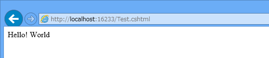

WebMatrix 2：ASP.NET と PHP
公開日：
前回（WebMatrix 2：フォルダーから Web サイトを作ってみる - だるろぐ）は、空のフォルダーから Web サイトを作って HTML ファイルを配置し、それをローカル Web サーバー（IIS Express 7.5）でホストするところまで進めた。でも、静的な HTML だけではちょっとつまらないかな。
「WebMatrix 2」では、サーバーサイドで動的に HTML を生成することもできる*1。“動的”というのは、要求に応じて異なる内容を出力できるということ。これができると、いろいろなメリットがある。
- データベースと連携できる
- ほかの Web サイトの情報を取り込んだり、Web サービスの API が利用できる*2
- Web サイト共通の部分（パラメーターやデザイン）が一元管理できる
- 状況に応じて出力がカスタマイズできる（例: モバイル向けWebデザイン）
世の中にはさまざまなサーバ・サイドプログラミング環境があるけれど、「WebMatrix 2」ではそのなかでも“ASP.NET”と“PHP”をサポートしている*3。空のフォルダーから作成した Web サイト でも簡単に利用できる。
ASP.NET（C#）*4
拡張子は“.cshtml”（Visual Basic の場合は *.vbhtml）。“Razor”と呼ばれるシンプルな構文で記述できる。
@{
var s = "Hello! World"; // 追加
}
<!DOCTYPE html>
<html lang="en">
<head>
<meta charset="utf-8" />
<title></title>
</head>
<body>
@s <!– 追加 –>
</body>
</html>

拡張子を省略してもアクセスできる。
PHP: Hypertext Preprocessor

拡張子は“.php”。おそらくもっともポピュラーなサーバーサイドプログラミング言語。
<?php $s = "Hello! World"; // 追加 ?><!DOCTYPE html> <html lang="en"> <head> <meta charset="utf-8" /> <title></title> </head> <body> <?php echo($s); ?> <!– 追加 –> </body> </html>

PHP を利用するには
「WebMatrix 2」で PHP を利用するには追加のコンポーネントが必要。

まず、［サイト］タブの［設定］画面を開き、“PHP を有効にする”をチェック。
すると、「PHP 5.4.8 for IIS Express」がインストールされる。


セットアップはほとんど自動で行われる。
どちらを利用すべきか？
なんなら混ぜて利用することもできるので、別にどっちでもよいのだけれど、これから Windows プラットフォームでサーバーサイドプログラミングを始めるならば、ASP.NET の方をお勧めしたい。後発であるがゆえのさまざまなメリットがある。
- 構文がシンプル
- 言語レベルでのセキュリティ設計で一日の長がある
- C# が利用できる。この知識は Web プログラミング以外にも活用できる
PHP の方が優れている面も、もちろんある。
- Windows / IIS 以外の環境でも動作する
- 動作実績が豊富でサンプルも多く、学習が容易
- Razor より少しだけ速いらしい